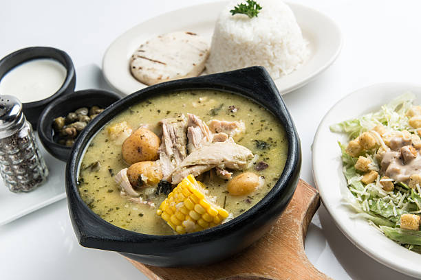

Ajiaco Recipe
Home

Description
Ajiaco is a traditional Colombian soup, primarily from the Bogotá area, known for its hearty and flavorful broth. It typically includes chicken, corn, and three types of potatoes, simmered with herbs like guascas and often served with avocado, capers, and sour cream.
Ingredients
- Chicken
- Water
- Potatoes (3 different types)
- Guascas (Colombian Herbs)
- Cilantro
- Corn on the Cob
- Table Cream
Steps
- In a large pot, place the chicken, corn, chicken bouillon, cilantro, scallions, garlic, salt and pepper.
- Add the water and bring to a boil, then reduce heat to medium and cook for about 30 to 35 minutes, until chicken is cooked and tender. Remove the chicken and set aside.
- Continue cooking the corn for about 15 more minutes. Discard green onions and add red potatoes, white potatoes, and the guascas. Cook for 15 more minutes.
- Uncover and add the frozen papa criolla and simmer for 15 minutes, season with salt and pepper.
- Shred the chicken breast and return to the pot. Serve the Ajiaco hot with capers and heavy cream on the side.
Home